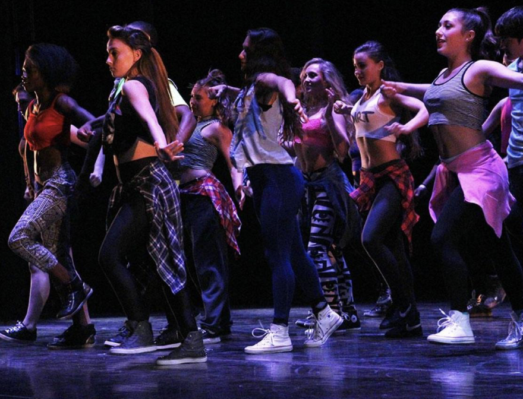
Rhythm & Roots: The Power of Movement
Black dance traditions carry memory, rhythm, and community from one generation to the next.
Return to HomeDance as Storytelling, Resistance, and Identity
Dance is so much more than movement. It is storytelling, resistance, celebration, spirituality, and identity. Across African and African American communities, dance has always been a powerful form of expression. Long before written language, stories, history, and traditions were passed down through rhythm and movement.
In many African cultures, dance is connected to ceremonies, religion, community gatherings, and major life events such as births, weddings, and harvests.
History, Survival, and Cultural Blending
During the transatlantic slave trade, enslaved Africans were stripped of many freedoms, but rhythm could not be taken away. Even in the harshest conditions, dance remained a form of communication, unity, and resistance.
Over time, African dance traditions blended with European and Indigenous influences, shaping many popular American dance styles. From spiritual ring shouts to modern hip-hop battles, African-rooted dance traditions have shaped global culture.
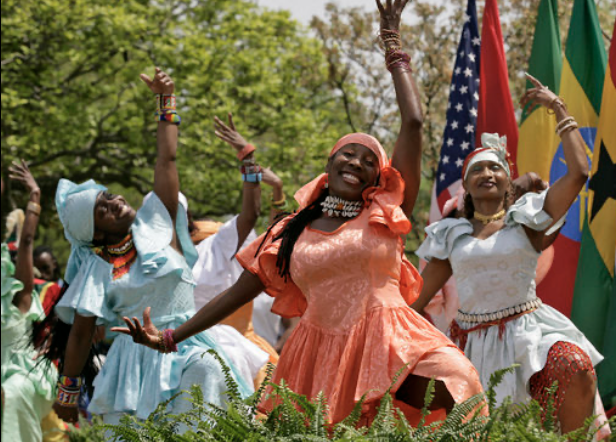
Dance Styles with African and African American Roots
- Hip-hop dance: Developed in the Bronx in the 1970s, rooted in African rhythmic movement and expression.
- Jazz dance: Influenced by African rhythms and improvisation, later evolving on stage and in film.
- Tap dance: Created from African foot rhythms blended with Irish step dancing.
- Breakdancing: Athletic street dance style born from hip-hop culture.
- Swing dance: Popular during the Harlem Renaissance and big band era.
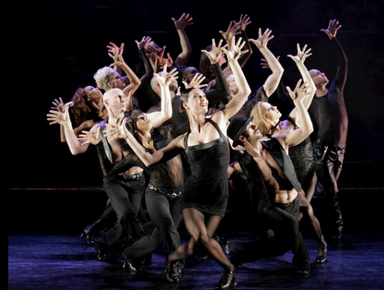

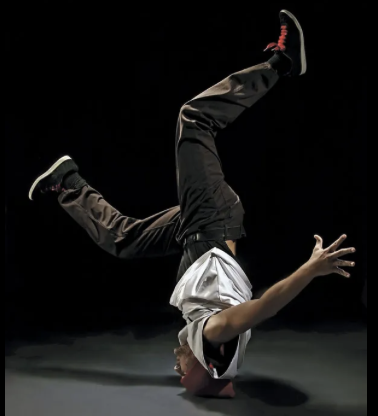
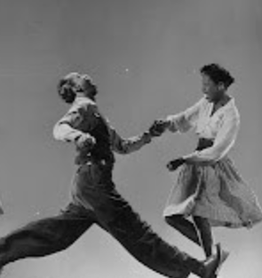
Traditional African Dances that Shaped Modern Movement
- Kpanlogo: A lively Ghanaian dance developed by the Ga people.
- Adumu: A ceremonial jumping dance performed by the Maasai people of East Africa.
- Umteyo: Known for flexibility and control of the upper body.
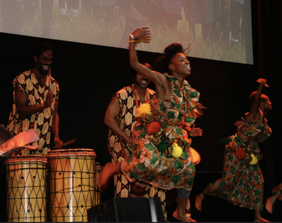
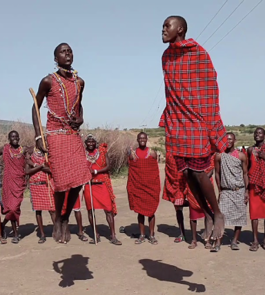
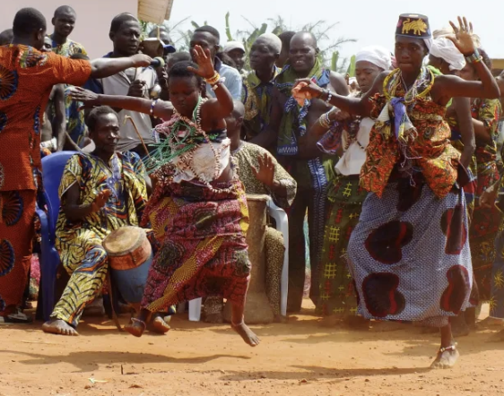
Dance as Protest and Empowerment
Dance has also been used as protest and empowerment. During the Harlem Renaissance, artists used movement to celebrate Black excellence and creativity. In the Civil Rights era and beyond, dance continued to reflect social change.
Today, social media platforms spread African and African American dance trends worldwide, continuing the tradition of cultural influence.
So next time you see a trending dance, attend a performance, or even move to your favorite song, think about where those rhythms began. Dance is history in motion, a living tradition that continues to shape the world.
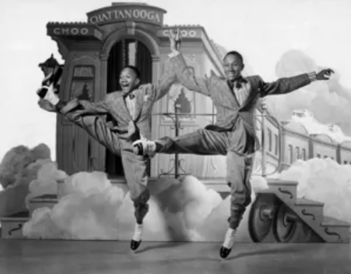
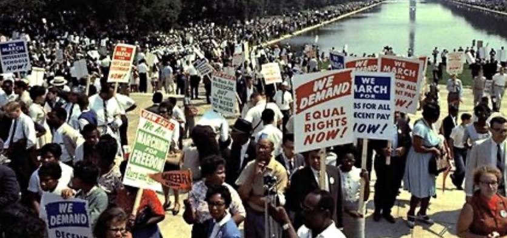
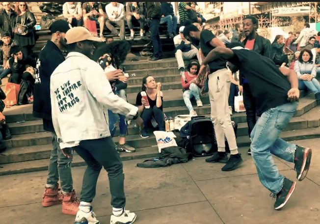
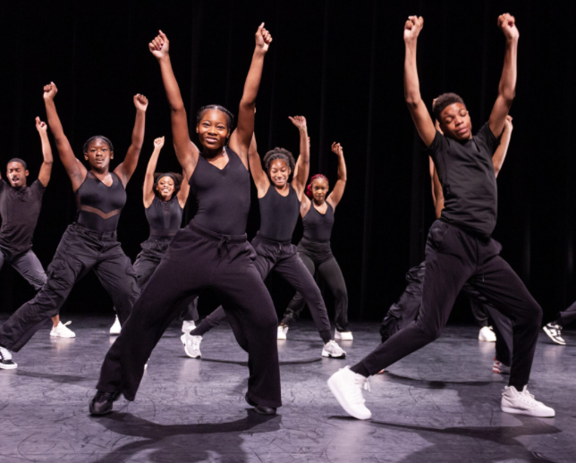
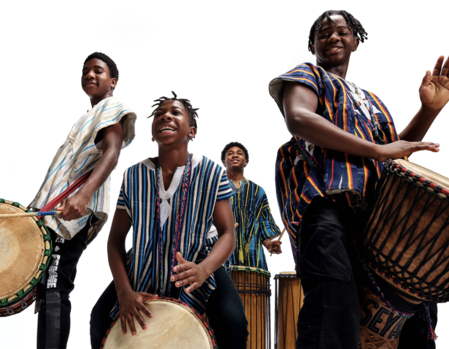
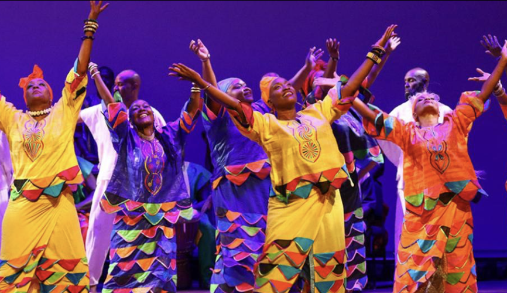
Every step has a story, and many of those stories begin in Africa.